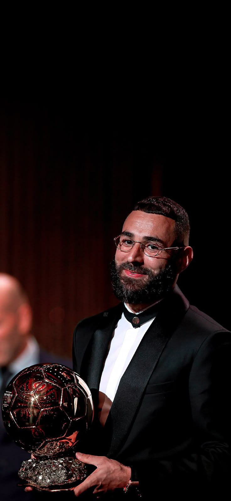

2021 — Lionel Messi

Messi captured his seventh Ballon d’Or after finally winning an international trophy — the Copa América with Argentina. He also finished as the top scorer and best player of the tournament.
| Competition | Achievement |
|---|---|
| Copa América | Champion, Top Scorer, MVP |
| La Liga | Top Scorer (30 goals) |
2022 — Karim Benzema
Benzema had a career-defining season, leading Real Madrid to both the UEFA Champions League and La Liga titles. His clutch goals and leadership earned him his first-ever Ballon d’Or.
| Competition | Achievement |
|---|---|
| UEFA Champions League | Champion, Top Scorer (15 goals) |
| La Liga | Champion, Top Scorer |
2023 — Lionel Messi

Messi earned his record eighth Ballon d’Or after captaining Argentina to their first World Cup title since 1986. His leadership and performances in Qatar cemented his status as one of football’s all-time greats.
| Competition | Achievement |
|---|---|
| FIFA World Cup | Champion, Golden Ball Winner |
| Ligue 1 | Champion with PSG |